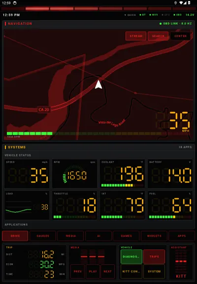
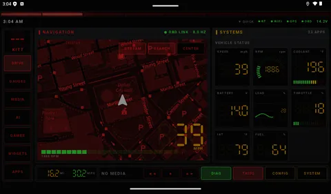

Which one? TWO EDITIONS
Both are the same KITT: the same scanner, OBD-II tools, KITT AI, map directions, browser, themes and settings. What differs is the screen they're laid out for and how hard they work your head unit. They have different app IDs, so you can install both and try each one.
KITT Launcher
The original. Laid out for a tall 9:16 screen: the map on top, gauges and apps in the middle, a full dock of trip, media and vehicle controls along the bottom, and page tabs above it.
- Every animation at full frame rate on capable hardware.
- Landscape screens work too: it switches to the side rail layout.

Pick it if your head unit is a big portrait screen (11" to 13" Tesla-style), or a powerful unit you'd rather run at full detail.
Download KITT LauncherKITT Launcher.2
Rebuilt for the short, wide screens most aftermarket head units have. On those screens, height is what runs out, so KITT and the page buttons move to a side rail and the dock shrinks to one slim row. The pages get nearly the full height.
- Screen size fits itself to the screen: a little smaller on short 1280×720 units, a little larger on big 10" panels.
- Lite mode turns itself on for budget units (3 GB of RAM or less, or four CPU cores or fewer). Fewer web pages stay loaded, the scanner runs at 30 fps and idle animations stop. Every feature still works.
- The KITT panel puts the controls on the left and the conversation on the right, so answers stay readable.

Pick it if your head unit is a typical 7", 9" or 10" landscape screen, especially a budget one that stutters with heavy apps.
Download KITT Launcher.2| KITT Launcher | KITT Launcher.2 | |
|---|---|---|
| Built for | 12.1" portrait (9:16) | 7"–10" landscape |
| Page buttons | Tabs above the dock | Side rail, with KITT on top |
| Dock | Full dock: trip, media, vehicle, KITT | One slim row: trip, media keys, Diag, Trips, Config, System |
| Screen size setting | Yes (Auto leaves portrait as is) | Yes (Auto fits 7"–10" screens) |
| Lite mode | Yes, Auto by hardware | Yes, Auto by hardware |
| Features | Identical: OBD-II scanner, KITT AI, directions, browser, themes, settings | |
| App ID | com.aiconsole.knightriderlauncher | com.aiconsole.kittlauncher2 |
Why two editions? A layout that fills a 13" portrait screen wastes a 7" landscape one: tabs and a tall dock take a quarter of its height. Rather than squeeze one design onto both, each edition gets the layout that suits its screen.
In action VIDEO
Short clips recorded on head-unit emulators in demo mode, so the vehicle data is simulated. Clips play while they're on screen. Tap one for full screen.
KITT Launcher.2 · 7" landscape
KITT Launcher · 12.1" portrait
Screens TAP TO ENLARGE
KITT Launcher on a portrait head-unit screen. KITT Launcher.2 on a 7" landscape screen is further down.
Diagnostics, every tab
KITT Config, every setting
KITT Launcher, captured on a 12.1" portrait head-unit emulator. Vehicle readings, the fault code and the trip are simulated with the app's demo mode, because no car was connected; on the road they come from your OBD adapter.
KITT Launcher.2 · 7" landscape, 1024×600
KITT Launcher.2, captured on a 1024×600 landscape head-unit emulator, the classic 7" size, in demo mode with simulated vehicle data.
The look DISPLAY
The red scanner never stops sweeping, and every screen wears the theme you pick.
Scanner light
- Always on across the top of the screen.
- Over other apps as a see-through strip that taps pass through.
- Shift light: flashes as the engine nears an RPM you choose (5,000 by default).
Display options
- Custom accent colour on any theme.
- Night mode: Off, Auto or Always.
- Units: imperial or metric.
- Status strip: clock, compass heading, Wi-Fi, Bluetooth, OBD link and battery volts. Tap it for Quick Settings.
- Icons: button sounds, theme-tinted app icons, or ADW/Nova icon packs.
- Screensaver after a set number of idle minutes while parked.
11 themes
- Film HUD themes change much more than colours: fonts, panel shapes, the scanner, panel frames, a full-screen scanline effect and themed status text.
- Terminator: red vision overlay, 20-segment scanner, T-800 readouts like "THREAT ASSESSMENT: NONE".
- RoboCop: cold blue visor glow, targeting-bracket panel corners, visor scanner, the Prime Directives.
- The Matrix: green phosphor terminal with optional falling digital rain behind see-through panels; KITT's messages type themselves out.
- Back to the Future (new): brushed DeLorean steel, the time circuits (destination, present and last-departed times in red, green and amber) in place of the clock, a flux-capacitor scanner and voice box, rivet-cornered panels and label-maker titles.
- More film, less Knight Rider: each film theme now boots with its own start-up sequence; Terminator scrolls machine code down the side and locks a targeting box onto the vehicle on the map; RoboCop's visor scan sweeps the screen and a reticle tracks the vehicle; alerts arrive as a "priority transmission", an "OCP advisory" or a typed terminal message.
- Film characters: with a film theme on, KITT becomes that film's character, with its own voice and way of talking: a deep, flat cyborg unit, a cold program agent, a procedural cyborg officer, or an excitable inventor. They're original characters in the spirit of the films, not imitations of the actors, and your personality setting still decides how crude they get.
- Film editions (new): every film theme comes in three, each with its own colours, scanner, screen effects, readouts and start-up sequence.
- Terminator: T-800 Vision · Liquid Metal (mercury chrome, a molten bead for a scanner, a sheen flowing across the screen) · Future War 2029 (night-battle blue, plasma bolts, a hunter-killer searchlight).
- RoboCop: Visor · ED-209 (gunmetal and hazard stripes, a red sensor eye) · OCP Delta City (navy and executive gold, news-flash alerts).
- The Matrix: Digital Rain · Real World (the hovercraft's cold blue, an EMP that charges and fires in the scanner) · Zion (amber firelight, dock beacons).
- Back to the Future: DeLorean 1985 · Hill Valley 2015 (hover-conversion neon) · Hill Valley 1885 (brass, sepia and steam), plus a small surprise at 88 km/h.
- 12 film characters (new): three per film, from a liquid-metal prototype and a resistance soldier to a ship operator, a resistance captain, an over-loud enforcement droid, a slick corporate executive, a teen time traveller and a holographic 2015 café host. Each edition brings its own, or pick your favourite. With sound effects on, each film plays its own start-up sound.
Film editions
Film theme and edition screenshots from KITT Launcher.2 on a 7" landscape emulator in demo mode. Future War 2029 isn't pictured: its effects are too heavy for the emulator used to capture these.
Home screen pages SWIPE
Swipe left and right between pages or tap the page buttons. A swipe that starts at the left or right edge of the screen always changes page, even over a web page or the map. The Home button always returns you to Drive.
Drive
- Live map (OpenStreetMap, centred on you) with your apps or vehicle status underneath. Side by side on wide screens. Places you've seen stay viewable without signal, and you can add a map file of your area for dead zones.
- Search and turn-by-turn directions right on the map (below).
- Stream window can take over the map area.
- Swiping pauses while you drag the map or a video.
Gauges · Media
- Gauges: a full wall of your OBD gauges.
- Media: whatever any app is playing, with title, artist, artwork and controls. Needs notification access (reads the active MediaSession).
AI · Games · Widgets
- AI: Gemini, Claude and Perplexity websites in tabs, signed in with your own accounts.
- Games (new, from RetroTV): a full retro-game browser. Big tiles for RetroGames.cc, PlayClassic, ClassicReload, webЯcade, the Internet Arcade, the MS-DOS library and more, with search, categories, favourites, Continue playing and your own sites. Play with a Bluetooth or USB controller or the on-screen touch pad; controllers work with every kind of web emulator. Game mode gives the game the whole screen, Focus game blows it up inside the page, ads and pop-ups are blocked, and emulator apps download from the same page and install with a tap.
- Widgets: any regular Android home-screen widget.
Apps
- Search, an A–Z jump bar and most-used sorting.
- Pin apps to the home grid, or hide them.
- Automatic groups: Navigation, Music, Video, Car, Social, Tools.
Map search & directions
- Search: tap Search on the map and type an address or place. Results come nearest first, and your recent destinations are one tap away.
- Preview: the route is drawn on the map with distance, drive time and arrival time. Start it, cancel it, or tap Other app to hand it to Google Maps, Waze or any navigation app.
- Guidance: the next turn shows at the top of the map with an arrow and distance. KITT speaks each turn twice, early and at the turn (earlier on faster roads), recalculates if you leave the route, and announces arrival.
- By voice: "navigate to the nearest Walmart", "take me to 1600 Main Street", "cancel the route".
- Free, no account. Needs a data connection and location. Guidance runs while the launcher is on screen, and spoken directions can be switched off.
Always there
- Dock fixed at the bottom.
- Driving layout (optional, off by default): bigger, simpler controls while moving: big media and volume buttons, KITT and your top three apps, and a bigger side rail and bottom bar with just the driving pages. It waits about 15 seconds of driving and 60 seconds stopped before switching, so it doesn't flicker in traffic.
- Quick Settings: brightness, sound, Wi-Fi, Bluetooth, night mode and a shortcut to Android Settings.
KITT, the AI co-pilot VOICE
Talk or type. Use the mic button, the steering-wheel voice button, or say "Hey KITT" if you turn that on (it can run fully offline, even over music, and quick commands like "KITT, pause music" or "KITT, find gas" work with no internet at all). Every question includes your live readings, fault codes, vehicle identity and a 30-day driving summary, so "how's my coolant?" and "how was that drive?" just work.
Google Gemini
- A fast model for conversation and a smarter one for diagnostics, each selectable.
- Optional Google Search grounding, skipped automatically on free-tier keys.
- When Google retires a model, KITT switches to the newest equivalent on its own.
Perplexity Agent API
- Presets from fast to high, chosen separately for conversation and diagnostics.
- Credit saving: vehicle questions and chit-chat skip the paid web search. Weather, prices, recalls, scores and diagnostics still search.
- Every answer shows what it cost.
Personality & voice
- KARR: KITT's evil twin. Cold, superior and quietly menacing, with no swearing. Same accuracy and safety rules.
- Savage KITT (default): Unfiltered with the dial past maximum. It swears in every sentence, is sarcastic about every fact, and ends every spoken line with a parting shot, while the facts and safety warnings stay exact.
- Unfiltered KITT: savagely sarcastic and foul-mouthed. It swears in every reply and alert and roasts your driving and your vehicle, using your live data as ammunition. Even the turn-by-turn directions get roasted, with the turn itself always said plainly first. Classic KITT: the polite TV version. Both follow strict rules: don't make things up, don't distract the driver.
- Voices: KITT neural (offline) (new, the default): natural voices that run on the head unit itself, free, with no API key and no internet once a voice is downloaded (about 20 MB; 12 to choose from, including an 11-voice studio pack). Or Gemini neural voices with your key, or device text-to-speech.
- Music ducks while KITT speaks.
Listening
- Speech input: Auto, KITT's own Gemini transcription, or a device recognizer you pick.
- Mic takeover guard: when the head unit hijacks the mic into its stock voice app, KITT notices. The Microphone fix section gives copy-paste ADB commands to stop it, and can bring KITT back to the front after a takeover.
Instant voice commands
- Run right away, no AI needed:
- "open Spotify", "show the gauges page"
- "stream YouTube", "close the stream"
- "navigate to …", "cancel the route"
- "play", "pause", "next track", "previous track"
- "read my codes", "open diagnostics"
- "start logging", "stop logging"
KITT speaks up
- Greets you at start-up and when the vehicle connects.
- Alerts: overheating, charging problems, new fault codes and your gauge limits (a gauge must stay past its limit for 20 seconds). Each is spoken at most twice per drive, then shown silently.
- Road weather: freezing rain, black ice, heavy snow or rain, fog, storms, strong wind (Open-Meteo), each at most every 3 hours.
- Maintenance reminders, at most twice a day.
- Messages read aloud: off, sender only, or the whole message.
Keys and subscriptions
- You bring your own API key. Web-grounded answers list their sources.
- Paying for Gemini, Claude or Perplexity Pro? KITT hands the question to that official app, because consumer subscriptions can't be used through an API.
Car scanner OBD-II
Plug in an ELM327-compatible adapter (a Bluetooth or Wi-Fi diagnostic dongle) and get Car Scanner-style diagnostics.
Adapters
- Bluetooth Classic (SPP/RFCOMM, with a channel-1 fallback for picky adapters).
- Bluetooth Low Energy, finding the adapter's read/write channels automatically.
- Wi-Fi (TCP).
- Saved adapters are tried in turn, with auto-reconnect.
- Head-unit friendly (new): BLE adapters entered by address are found first and tried several ways, a new connection never fights an old one, and an adapter entered with the wrong type still uses the right one.
- Protocol auto-detect or manual, and a fast-polling switch.
Gauges · Data
- Gauges: your own dashboard in four styles: Dial, LED bar, Digital, Graph. High and low warning limits on any gauge.
- Data: live graphs of any sensor, and CSV data logging while you keep using the launcher, exportable anywhere.
Codes
- Stored, pending and permanent fault codes.
- Freeze-frame data and emissions readiness (would you pass inspection).
- Ask KITT about any code.
- Clearing codes is a manual button with a warning. Nothing clears them automatically.
Vehicle
- VIN decoding: built-in with check-digit validation, plus an NHTSA lookup.
- Battery & charging: resting, cranking and running voltage.
- Maintenance schedule with due-soon and overdue status, plus odometer tracking.
- Fuel log: measured full-to-full economy, cost per mile, range.
Tools
- Performance timer: 0–60 mph, 1/4 mile, 60–0 braking (indicative; OBD speed has limited precision).
- Mode 06 on-board test results, module scan, adapter identification.
- A raw command console that only sends read-only commands.
- A connection log that names which layer failed: Bluetooth, adapter, ELM init, ECU or decoding.
PIDs · Link · Trips
- PIDs: every standard sensor, manufacturer profiles auto-detected from your VIN (GM, Ford, Toyota, Stellantis, Honda, Nissan, Hyundai/Kia, VW group, BMW, Mercedes, Subaru, Mazda), and custom PIDs with Torque-style formulas like
((A*256)+B)/4. - Link: find, pair and connect adapters, pick the profile and protocol.
- Trips: each drive is logged once a second. See distance, time, speed and fuel economy for your last drive and the week.
Browser STREAM · AI · GAMES
One shared, tabbed browser powers the Stream window on the Drive page, the AI page and the Games page.
Stream window
- Video and music over the map area. It keeps playing while driving, by design.
- New home page: big tiles by category (movies & TV, live TV, library card, classics, music, radio), search, favourites, Continue watching and your own sites. Theater gives the window the whole screen and Focus blows the video up inside the page.
- Video: Fandango at Home (new), YouTube, Tubi, Pluto TV, Plex, Roku Channel, Xumo Play, Crackle, Kanopy, Hoopla, PBS, Twitch and more: free, licensed services.
- Music: YT Music, Spotify, SoundCloud, Pandora, iHeartRadio, TuneIn, Amazon Music, Deezer, Bandcamp, SomaFM, Radio Garden and more.
Sites & pages
- Save any site with ★ Save, or import and export bookmarks under My sites.
- Per site: desktop or mobile layout, dark pages, ad blocking (never on YouTube), text size. Google sign-in always opens as mobile, so signing in works in either mode.
- Stronger ad blocking (new): a much bigger block list, stand-ins for blocked ad scripts so pages that wait for an ad still start, hidden ad slots, and pop-ups or redirects you didn't tap held back on the Games page and stream window (one tap opens them).
- Downloads (new) ask before saving and go to Downloads/KITT, signed in as you are on that site. A downloaded app shows an Install button; nothing installs unless you tap it.
- Same toolbar on all three: Stream, AI and Games. ▲ ▼ scroll chat sites too, and Back steps back through pages everywhere.
- Tabs; pop-ups you trigger open as new tabs. Links that try to launch other apps are blocked.
- Separate sign-ins for each page.
Sound keeps playing
- A page playing music or video keeps playing when you swipe to another home page. Its tab shows ♪.
- One thing at a time: starting sound on another page, or pressing play in another app such as YouTube Music, pauses it. KITT's voice only lowers it, and after a call it picks up again.
Can't take the launcher down
- A stuck page is shut down, not the launcher. A page that hangs, like a very long AI chat, used to freeze everything until the head unit fell back to its stock launcher. Now that page shows "Page stopped" with a Reload button, and everything else keeps running.
- Light on memory: pages you aren't looking at pause unless they're playing sound. When too many are open, the least recently used ones are unloaded and reload when you return. When Android runs low on memory, every hidden page is unloaded.
Reading and data
- Big text: on the AI page, the latest answer in large type, with read-aloud.
- Mini player: a video in the stream window keeps playing in a corner when you leave the Drive page. Tap it to go back.
- Data saver per site: no images, and videos wait for a tap. Handy on a phone hotspot.
Userscripts
- Install Tampermonkey-style
.user.jsscripts from Greasy Fork, a link, or pasted code. - They run as the page starts loading.
Helpers
- Close on-page pop-ups, scroll buttons, full screen, reload, find-the-install-link.
- Game controllers: buttons map to the keys web emulators expect; the stick works as a D-pad.
- Voice to AI: a spoken question can be typed into every open AI tab.
KITT rides along NEW
KITT now pays attention while you drive, using the data it already reads. Everything is read-only: nothing is ever sent to the vehicle.
Commentary & report cards
- Hard stops, revving a cold engine, ten minutes of idling, full throttle: KITT has something to say, rate-limited so it doesn't nag.
- When you switch off, the drive gets a grade (A+ to F) for smoothness, idling and economy against your 30-day average.
- Last-drive recap when you set off again: fault codes still showing, a weak battery, last time's grade.
Fuel & parking
- Below 12% fuel, KITT offers the nearest gas station and routes you there.
- Where you switched off is saved with its address. Scan the code on the Trips screen to keep it on your phone.
Speed limits
- The road's limit from OpenStreetMap shows next to the speedometer and turns red when you're over it.
- Optional spoken warning when you stay over by more than your margin.
Pursuit mode & Maps + KITT
- Pursuit mode: a full-screen 1982-style dash with a bar-graph speedometer and KITT's voice box.
- Maps + KITT: opens Google Maps or Waze with a narrow KITT panel (speed, limit, revs, temperature, fuel, media keys) beside it.
Look after itself
- System check: every permission and setting KITT needs, each with a fix button.
- Report to phone: a QR code your phone scans on the same Wi-Fi or hotspot, or the share sheet.
- Weekly backup to Downloads/KITT, and What's new after every update.
Launcher settings CONFIG
Everything else that makes it yours.
Steering-wheel buttons
- "Learn" any button the head unit sends, then assign it:
- Talk to KITT, Diagnostics
- Next page, previous page, Drive page
- Stream window, play/pause
Start-up & drivers
- Start-up routine: on start, or on wake after 5+ minutes asleep, open a chosen app and/or resume audio.
- Driver profiles: personal settings per driver. Vehicle data (adapters, odometer, service, fuel) stays shared.
- Default assistant: set KITT as Android's assistant so the voice button opens it.
Upkeep
- Backup and restore all settings in one file. API keys are deliberately left out.
- Updates: checks GitHub for new releases, shows download progress and installs them. On Android 12 and up, updates after the first one install without a confirmation screen. Turn on Beta updates to try test releases first.
- Safe mode: if KITT crashes at start-up a few times in a row, it starts without web pages and extras so the head unit is never stuck, with Report and Back to normal buttons.
- Search in KITT Config: type a word and jump to that setting.
- Report a problem: one text report with recent crashes, the OBD connection log, your settings (keys removed) and the app's own log.
Install APK
Neither edition is on the Play Store. Install straight from the APK: KITT Launcher or KITT Launcher.2.
First install
- On the head unit, open the latest release of your edition and download the
.apkunder Assets (or copy it over on a USB stick). - Open it, and allow your browser or file manager to install unknown apps when Android asks.
- Press Home and choose KITT Launcher or KITT Launcher.2, then Always.
Updates & keys
- Updates: KITT Config → Updates finds and installs new versions. Each edition updates from its own download page.
- Built it yourself, or installed a test build? Android only updates an app with one signed by the same key. If Updates says the key is different, use Backup, uninstall once, and install the release APK. Updates work from then on.
- AI: KITT's answers need your own Gemini or Perplexity API key, entered in KITT Config.
- OBD: any ELM327-compatible Bluetooth or Wi-Fi adapter.
What's new RELEASES
Installed copies update from KITT Config → Updates. All releases: KITT Launcher · KITT Launcher.2.
Next update: v1.9 for both editions
- Music library on the Media page: a new Library tab lists the music apps on the head unit that share their library (Spotify, YouTube Music, USB players and others). Pick one, search it, or browse its playlists, artists and albums and tap to play, without opening the app. Apps that don't allow it show a message and an Open button instead.
- Recently played: the last songs, playlists and searches you started from KITT come back at the top of the Library, one tap to play again.
- "Play" by voice: "Hey KITT, play Nightcall on Spotify" searches that app's library and plays it. Leave out the app and KITT uses the one playing now or the one you used last.
- Back from the radio screen: some head units throw their stock radio screen over the launcher when an app starts audio or opens the mic. If that happens within a few seconds of KITT speaking, listening, or starting music, KITT brings itself back. Opening an app yourself is never undone. Turn it off under KITT Config → Microphone fix.
KITT Launcher v1.8 · KITT Launcher.2 v1.8
- Offline "Hey KITT": a small listener on the head unit hears you with no internet and no chimes, even over music. Quick commands run on their own: "KITT, pause music", "KITT, next song", "KITT, find gas", "KITT, where did I park", "KITT, show gauges".
- KITT offline speech: the mic understands full questions and commands with no signal and no Google recognizer, using a small speech model on the head unit (30 MB download under KITT Config → Speech input). With offline "Hey KITT" on too, voice works anywhere.
- Answers with no signal: KITT still answers the common questions from the car itself (engine temperature, battery, fuel, speed, fault codes, "is everything OK?"), instantly, with any warning first.
- Safe mode: if KITT ever crashes at start-up a few times in a row, it starts in safe mode so you're never stuck, with buttons to report the problem or go back to normal.
- Last-drive recap: one line when you set off: fault codes still showing, a weak battery, last time's grade.
- Bigger buttons while driving: volume controls, your top three apps, and a bigger rail and bottom bar with just the driving pages.
- Search in KITT Config, beta updates, and offline map files for dead zones.
- Faster and steadier: the home screen shows first on start-up; OBD adapters reconnect faster by remembering what worked; the offline voice frees its memory when idle and checks every download.
- Fixes: pages can no longer save files or open an installer without a tap; urgent alerts never wait on the offline voice; sign-ins and game launchers work again; controllers keep working after a restart and no button sticks.
- One app, two editions: KITT Launcher and KITT Launcher.2 now come from the same code, so every update reaches both at once. Both keep updating in place from KITT Config → Updates.
KITT Launcher v1.7 · KITT Launcher.2 v1.5
- KITT neural (offline) voice: free, natural voices that run on the head unit, with no API key and no internet once downloaded. Now the default; download one under KITT Config → Voice.
- Games page rebuilt from RetroTV: retro-game site tiles, favourites, continue playing, game mode, an on-screen touch pad, and controllers that work with every kind of web emulator.
- Stream window home page: free movie, TV, music and radio services in tiles (Fandango at Home added), favourites, continue watching and theater mode.
- Film editions: three per film theme (T-800, Liquid Metal, Future War; Visor, ED-209, Delta City; Digital Rain, Real World, Zion; 1985, 2015, 1885) and eight new film characters.
- Fixes: Bluetooth OBD adapters connect more reliably on head units (BLE scans that failed at once, BLE adapters entered by address, Classic adapters that connected only once); the browser is lighter beside the launcher's animations, and YouTube Music no longer stalls or reloads.
- Safety and polish: pages can no longer save files or open an installer without a tap; urgent alerts (overheating, a new fault) never wait on the offline voice, and a head unit that can't play it falls back instead of crashing; drivers with a Gemini key keep Gemini until an offline voice is downloaded; Google and other sign-ins and game launchers that hand off to another site work again; controllers keep working after the car restarts or a pad reconnects, and no button sticks.
KITT Launcher v1.6 · KITT Launcher.2 v1.4
- New theme: Back to the Future, with time circuits, a flux-capacitor scanner and DeLorean steel.
- Terminator, RoboCop and The Matrix go further: start-up sequences, targeting on the map, scrolling machine code, a visor sweep and film-styled alerts.
- Film characters: each film theme gives KITT that film's character voice and personality (original characters, not actor imitations).
KITT Launcher v1.5 · KITT Launcher.2 v1.3
- OBD Bluetooth on picky head units: the Link tab shows what Android's Bluetooth looks like to apps, explains why a scan found nothing, lists adapters without a name, and lets you connect straight to an adapter's address (Classic or BLE).
KITT Launcher v1.4 · KITT Launcher.2 v1.2
- KITT rides along: it comments on hard stops, revving a cold engine, long idling and full throttle, and grades every drive when you switch off. Report cards are on the Trips screen.
- Low fuel: KITT warns you and finds the nearest gas station with one tap, or say "find gas".
- Parking spot: saved when you switch off. Scan the QR code on the Trips screen to put it on your phone, or ask "where did I park?".
- Speed limits from OpenStreetMap on the map, with an optional warning when you stay over.
- System check in KITT Config: every permission and setting KITT needs, each with a fix button. KITT also tells you if another launcher has taken over.
- Problem reports to your phone with a QR code or the share sheet. No USB stick needed.
- Pursuit mode: a full-screen 1982-style dash. Maps + KITT: KITT's panel next to Google Maps or Waze.
- KARR, the evil-twin personality, and optional KITT sound effects.
- Night theme that switches at sunset, big text for AI answers, a mini player for the stream window, per-site data saver.
- Weekly backup to Downloads/KITT that restores into either edition, GM tire pressures (community-sourced) and What's new after each update.
KITT Launcher v1.3 · KITT Launcher.2 v1.1
- "Hey KITT" no longer listens over your music. It used to restart the microphone every few seconds even while music played, so some head units chimed or interrupted the music again and again. It now waits until nothing is playing; the steering-wheel voice button and the KITT button work any time.
KITT Launcher v1.2 · KITT Launcher.2 v1.0
- AI page no longer freezes the launcher: a stuck page (long Claude chats were the usual cause) is shut down and offers Reload, instead of freezing everything until the head unit fell back to its stock launcher.
- Updates that actually install: no download time limit, so slow phone hotspots work. The app shows download progress and every install result, and checks the APK first. On Android 12+, later updates skip the confirmation screen.
- Lighter browser: hidden pages pause and are unloaded when memory is short.
- Lite mode and a Screen size setting. On landscape screens, a side-rail layout.
- Savage KITT, the new default personality.
- Freeze reports: if the launcher ever stalls, Report a problem now shows where.
- New: KITT Launcher.2 v1.0, the 7"–10" landscape edition, with everything above. What's different · Download.
v1.1
- Map search: the search box no longer closes the moment the on-screen keyboard opens on portrait screens.
- Map search: the keyboard closes when you press Search, so the results aren't hidden.
- KITT: says "1 code", not "1 codes".
v1.0
- First public release: KITT home screen and scanner light, 10 themes, OBD-II scanner, KITT AI co-pilot, map search with spoken directions, and the browser for streaming, AI chat and games.
Privacy and safety
- API keys are encrypted on the device and never included in backups or problem reports.
- No analytics or tracking. The app only connects to the AI service you chose, Open-Meteo weather, the NHTSA VIN lookup, map tiles, OpenStreetMap search and routing (only when you search or navigate), and the sites you open.
- The car is read-only. No clearing codes, ECU changes or write commands unless you press the button for that exact action.